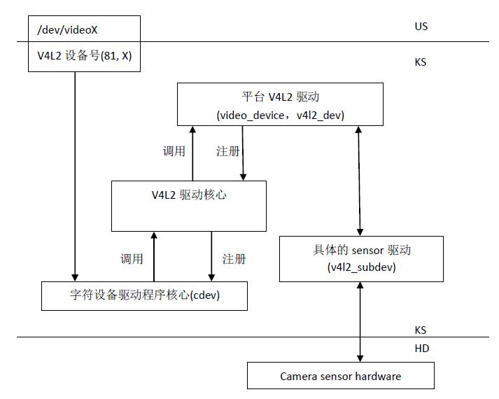
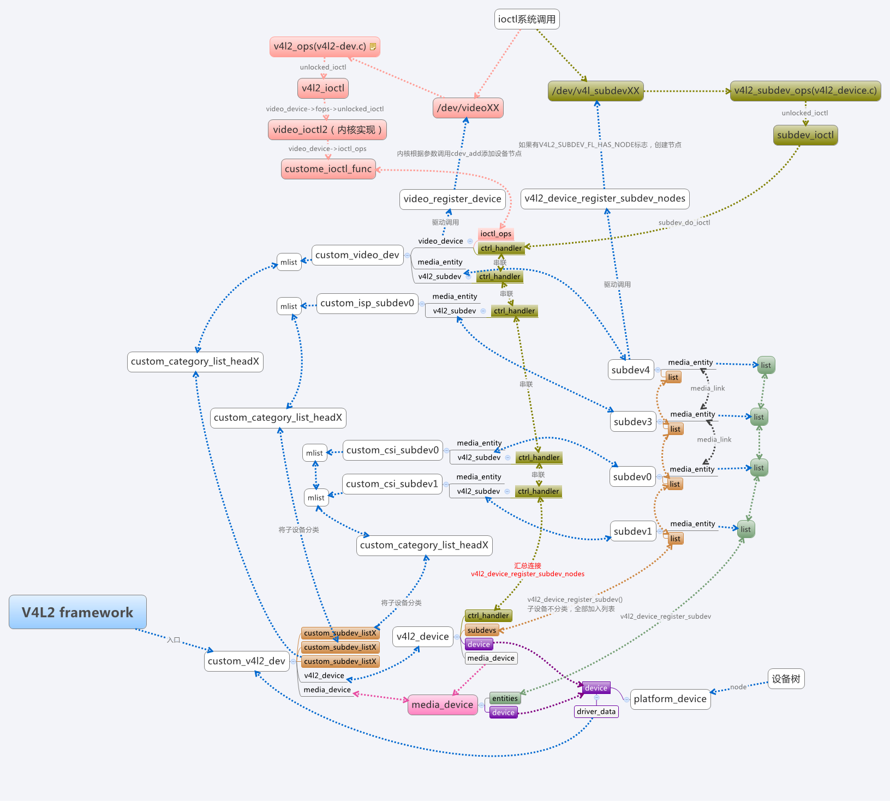
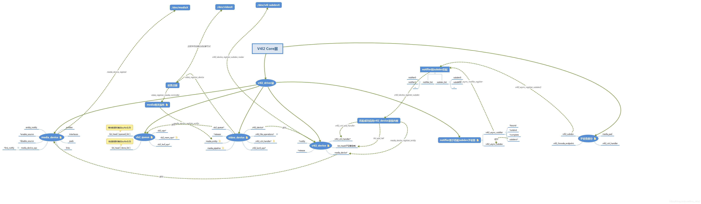
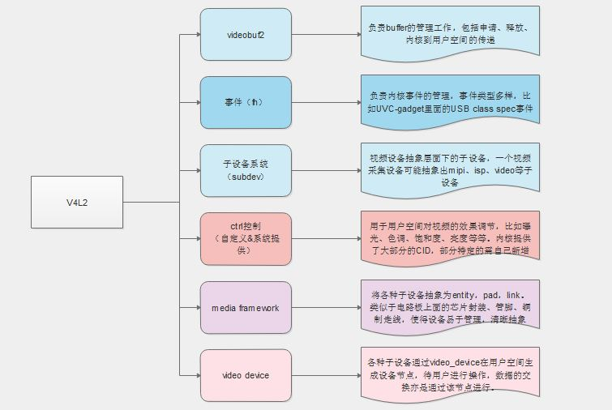
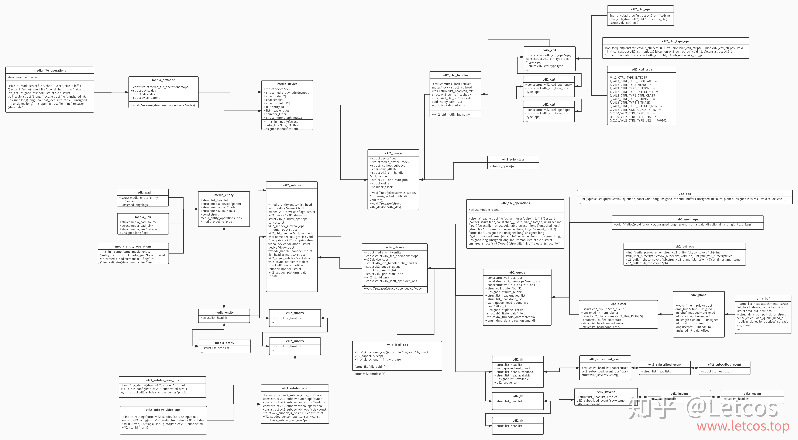
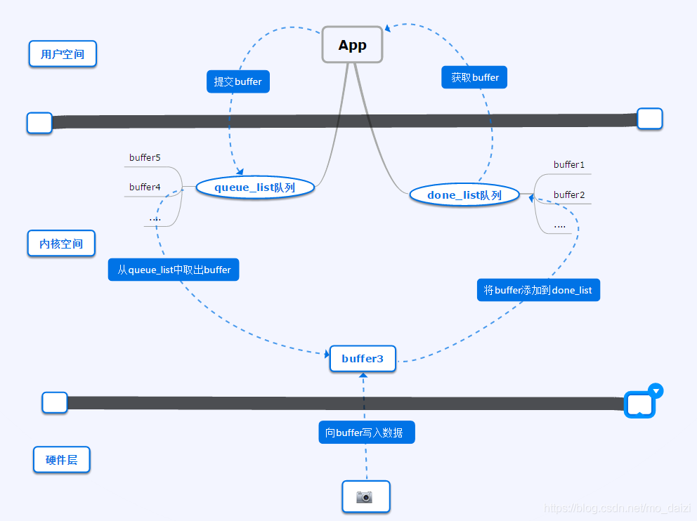
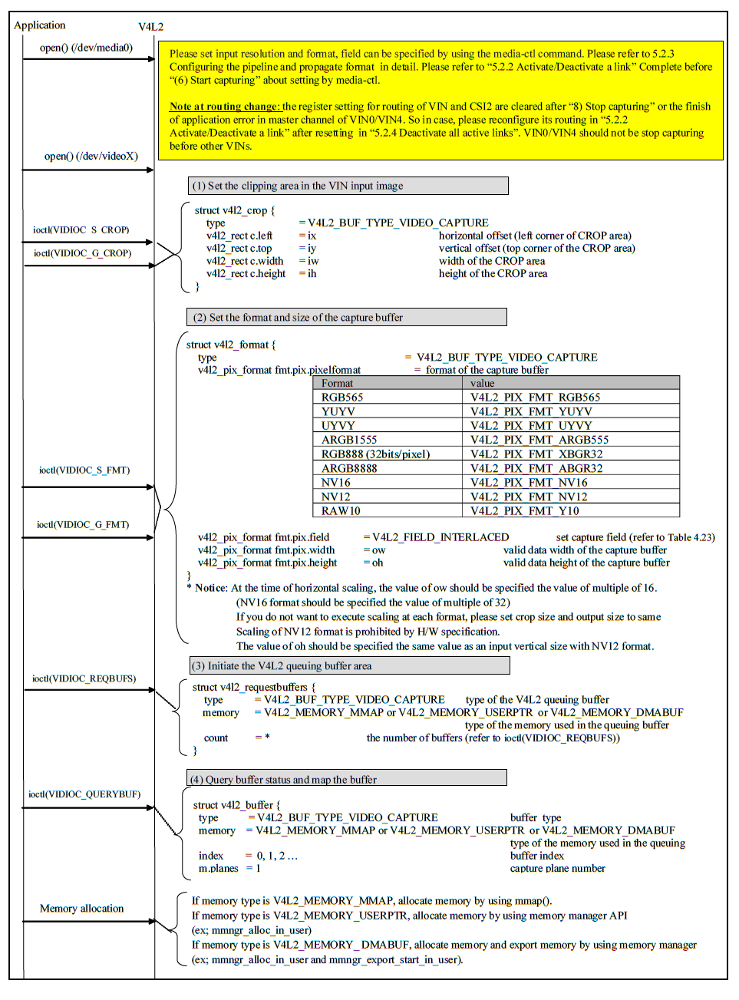
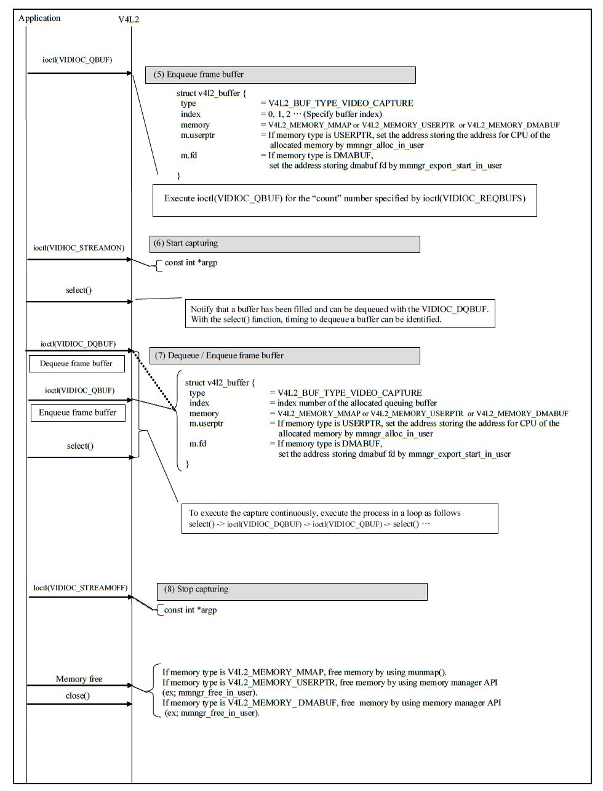

4.15.1. V4L2框架概述
4.15.1.1. 整体框架
Video for Linux 2,简称V4L2,是linux内核中关于视频设备的内核驱动框架,为上层访问底层的视频设备提供了统一的接口.
V4L2框架主要涉及以下几个部分
字符设备驱动程序核心: V4L2本身就是一个字符设备,具有字符设备所有的特性,暴露接口给用户空间
V4L2驱动核心: 主要是构建一个内核中标准视频设别驱动的框架,为视频操作提供统一的接口
平台V4L2设备驱动:在V4L2框架下,根据平台自身的特性实现与平台相关的V4L2驱动部分,包括注册video_device和v4l2_device
具体的sensor驱动: 实现各种设备控制方法供上层调用,并注册v4l2_subdev

内核中V4L2各组件关系图

图中包含来以下几个关键因素
cocntroler主要抽象的结构体
v4l2_device: 这是整个输入设备的总结构体,可以认为他是整个v4l2框架的入口,充当驱动的管理者.video_device: 用于生成设备节点(/dev/videoX), 给用户提供操作接口,如查询/设置参数,获取buffer数据,向内核提交处理好的buffer等v4l2_async_notifier: 用于子设备的异步注册,subdev子设备的注册通常和controller设备是分开的,controler设备需要通过v4l2_async_notifier查找子设备并将其注册到v4l2_device进行统一管理media_device: 用于运行时数据流的管理,嵌在V4L2 device内部vb2_queue: 提供内核与用户空间的buffer流转接口,包括buffer的申请,buffer在内核和用户空间之间的切换等
subdev子设备主要抽象的结构体
v4l2_subdev: 子设备抽象结构体,提供子设备的基本参数设置及函数接口v4l2_ctrl_handler: 控制模块,提供子设备(主要是ISP和video)在用户空间的操作接口,比如改变图像的亮度,对比度等


4.15.1.2. 主要的数据结构
在V4L2架构下视频的获取以及控制通过open,read以及ioctl等系统调用接口完成
数据结构关系图

4.15.1.2.1. v4l2_fops
static const struct file_operations v4l2_fops = {
.owner = THIS_MODULE,
.read = v4l2_read,
.write = v4l2_write,
.open = v4l2_open,
.get_unmapped_area = v4l2_get_unmapped_area,
.mmap = v4l2_mmap,
.unlocked_ioctl = v4l2_ioctl,
#ifdef CONFIG_COMPAT
.compat_ioctl = v4l2_compat_ioctl32,
#endif
.release = v4l2_release,
.poll = v4l2_poll,
.llseek = no_llseek,
};
v4l2_fops在__video_register_device函数中会被绑定到一个cdev上,并注册到系统中去
4.15.1.2.2. video_device
video_device结构体用于在/dev目录下生成设备节点文件,把操作设备的接口暴露给用户空间.
struct video_device
{
#if defined(CONFIG_MEDIA_CONTROLLER)
struct media_entity entity;
struct media_intf_devnode *intf_devnode;
struct media_pipeline pipe;
#endif
const struct v4l2_file_operations *fops; #设备操作函数
u32 device_caps;
/* sysfs */
struct device dev; #V4L2设备
struct cdev *cdev; #字符设备
struct v4l2_device *v4l2_dev;
struct device *dev_parent; #父设备
struct v4l2_ctrl_handler *ctrl_handler;
struct vb2_queue *queue;
struct v4l2_prio_state *prio;
/* device info */
char name[32]; #设备信息
enum vfl_devnode_type vfl_type;
enum vfl_devnode_direction vfl_dir;
int minor;
u16 num;
unsigned long flags;
int index;
/* V4L2 file handles */
spinlock_t fh_lock;
struct list_head fh_list;
int dev_debug;
v4l2_std_id tvnorms;
/* callbacks */
void (*release)(struct video_device *vdev);
const struct v4l2_ioctl_ops *ioctl_ops;
DECLARE_BITMAP(valid_ioctls, BASE_VIDIOC_PRIVATE);
struct mutex *lock;
};
4.15.1.2.3. v4l2_device
struct v4l2_device {
struct device *dev;
struct media_device *mdev;
struct list_head subdevs; #用于跟踪注册的subdevs
spinlock_t lock;
char name[V4L2_DEVICE_NAME_SIZE]; #设备名称,默认情况下,驱动程序名字+总线ID
void (*notify)(struct v4l2_subdev *sd,
unsigned int notification, void *arg); #由子设备调用的回调函数
struct v4l2_ctrl_handler *ctrl_handler;
struct v4l2_prio_state prio;
struct kref ref;
void (*release)(struct v4l2_device *v4l2_dev);
};
每个设备实例都通过v4l2_vevice(v4l2-device.h)结构体来表示,大多数情况下这个结构体会嵌入式到更大的结构体中
v4l2_device_register(struct device dev, struct v4l2_device v4l2_dev);函数可以注册一个v4l2设备
4.15.1.2.4. v4l2_subdev
struct v4l2_subdev {
#if defined(CONFIG_MEDIA_CONTROLLER)
struct media_entity entity;
#endif
struct list_head list;
struct module *owner;
bool owner_v4l2_dev;
u32 flags;
struct v4l2_device *v4l2_dev; //指向父设备
const struct v4l2_subdev_ops *ops; //v4l2设备操作接口
const struct v4l2_subdev_internal_ops *internal_ops;
struct v4l2_ctrl_handler *ctrl_handler; //subdev控制接口
char name[V4L2_SUBDEV_NAME_SIZE];
u32 grp_id;
void *dev_priv; #私有数据指针
void *host_priv;
struct video_device *devnode;
struct device *dev;
struct fwnode_handle *fwnode;
struct list_head async_list;
struct v4l2_async_subdev *asd;
struct v4l2_async_notifier *notifier;
struct v4l2_async_notifier *subdev_notifier;
struct v4l2_subdev_platform_data *pdata;
};
struct v4l2_subdev_ops {
const struct v4l2_subdev_core_ops *core;
const struct v4l2_subdev_tuner_ops *tuner;
const struct v4l2_subdev_audio_ops *audio;
const struct v4l2_subdev_video_ops *video;
const struct v4l2_subdev_vbi_ops *vbi;
const struct v4l2_subdev_ir_ops *ir;
const struct v4l2_subdev_sensor_ops *sensor;
const struct v4l2_subdev_pad_ops *pad;
};
设备驱动程序必须向v4l2_device注册v4l2_subdev, v4l2_device_register_subdev(v4l2_dev, sd).注册成功后subdev->dev就指向来v4l2_device
4.15.1.2.5. media_device
struct media_device {
/* dev->driver_data points to this struct. */
struct device *dev;
struct media_devnode *devnode;
char model[32];
char driver_name[32];
char serial[40];
char bus_info[32];
u32 hw_revision;
u64 topology_version;
u32 id;
struct ida entity_internal_idx;
int entity_internal_idx_max;
struct list_head entities;
struct list_head interfaces;
struct list_head pads;
struct list_head links;
/* notify callback list invoked when a new entity is registered */
struct list_head entity_notify;
/* Serializes graph operations. */
struct mutex graph_mutex;
struct media_graph pm_count_walk;
void *source_priv;
int (*enable_source)(struct media_entity *entity,
struct media_pipeline *pipe);
void (*disable_source)(struct media_entity *entity);
const struct media_device_ops *ops;
struct mutex req_queue_mutex;
atomic_t request_id;
};
4.15.1.3. 代码分析
以下的代码分析基于瑞萨的rcar平台
rcar-core.c中的rcar_vin_probe函数
static int rcar_vin_probe(struct platform_device *pdev)
{
const struct soc_device_attribute *attr, *dev_attr;
struct rvin_dev *vin;
struct resource *mem;
int irq, ret;
struct device_node *isp_node;
vin->dev = &pdev->dev;
rvin_mc_init(vin)
----rvin_group_get(vin)
----rvin_group_init(group, vin)
----mdev->dev = vin->dev;
----mdev->ops = &rvin_media_ops;
----media_device_init(mdev)
----rvin_mc_parse_of_graph(vin)
----v4l2_async_notifier_init(&vin->group->notifier)
----vin->group->notifier.ops = &rvin_group_notify_ops;
----v4l2_async_notifier_register(&vin->v4l2_dev,&vin->group->notifier)
----v4l2_async_notifier_try_all_subdevs(notifier)
----v4l2_async_match_notify(notifier, v4l2_dev, sd, asd)
----v4l2_device_register_subdev(v4l2_dev, sd);
----v4l2_async_notifier_try_complete(notifier)
----v4l2_async_notifier_call_complete(notifier)
----notifier->ops->complete(notifier) //此函数会调用rvin_v4l2_register函数
----v4l2_ctrl_handler_init(&vin->ctrl_handler, 1)
----v4l2_ctrl_new_std(&vin->ctrl_handler, &rvin_ctrl_ops...)
----vin->vdev.ctrl_handler = &vin->ctrl_handler;
rvin_parallel_init(vin)
----v4l2_async_notifier_register(&vin->v4l2_dev, &vin->notifier)
}
rcar-csi2.c中的rcsi2_probe函数
static int rcsi2_probe(struct platform_device *pdev)
{
struct rcar_csi2 * priv;
v4l2_subdev_init(&priv->subdev, &pdev->dev)
v4l2_set_subdevdata(&priv->subdev, &pdev->dev)
priv->subdev.entity.ops = &rcar_csi2_entity_ops;
media_entity_pads_init(&priv->subdev.entity, NR_OF_RCAR_CSI2_PAD, priv->pads)
v4l2_async_register_subdev(&priv->subdev)
----list_for_each_entry(notifier, ¬ifier_list, list)
----v4l2_async_notifier_find_v4l2_dev(notifier)
----v4l2_async_find_match(notifier, sd);
----v4l2_async_match_notify(notifier, v4l2_dev, sd, asd)
----v4l2_device_register_subdev(v4l2_dev, sd)
----v4l2_async_notifier_call_bound(notifier, sd, asd)
----notifier->ops->bound
----v4l2_async_notifier_try_complete(notifier);
----notifier->ops->complete
}
rcar-v4l2.c中主要的函数是rvin_v4l2_register, 此函数在rcar-core.c中的rvin_parallel_notify_complete调用. 而rvin_parallel_notify_complete被注册到rvin_parallel_notify_ops 结构体中.
int rvin_v4l2_register(struct rvin_dev *vin)
{
struct video_device *vdev = &vin->vdev;
int ret;
vin->v4l2_dev.notify = rvin_notify;
/* video node */
vdev->v4l2_dev = &vin->v4l2_dev;
vdev->queue = &vin->queue;
snprintf(vdev->name, sizeof(vdev->name), "VIN%u output", vin->id);
vdev->release = video_device_release_empty;
vdev->lock = &vin->lock;
vdev->fops = &rvin_fops;
vdev->device_caps = V4L2_CAP_VIDEO_CAPTURE | V4L2_CAP_STREAMING |
V4L2_CAP_READWRITE;
/* Set a default format */
vin->format.pixelformat = RVIN_DEFAULT_FORMAT;
vin->format.width = RVIN_DEFAULT_WIDTH;
vin->format.height = RVIN_DEFAULT_HEIGHT;
vin->format.field = RVIN_DEFAULT_FIELD;
vin->format.colorspace = RVIN_DEFAULT_COLORSPACE;
if (vin->info->use_mc) {
vdev->ioctl_ops = &rvin_mc_ioctl_ops;
} else {
vdev->ioctl_ops = &rvin_ioctl_ops;
rvin_reset_format(vin);
}
rvin_format_align(vin, &vin->format);
ret = video_register_device(&vin->vdev, VFL_TYPE_GRABBER, -1);
if (ret) {
vin_err(vin, "Failed to register video device\n");
return ret;
}
video_set_drvdata(&vin->vdev, vin);
v4l2_info(&vin->v4l2_dev, "Device registered as %s\n",
video_device_node_name(&vin->vdev));
return ret;
}
rvin_fops
static const struct v4l2_file_operations rvin_fops = {
.owner = THIS_MODULE,
.unlocked_ioctl = video_ioctl2,
.open = rvin_open,
.release = rvin_release,
.poll = vb2_fop_poll,
.mmap = vb2_fop_mmap,
.read = vb2_fop_read,
};
rvin_mc_ioctl_ops
static const struct v4l2_ioctl_ops rvin_mc_ioctl_ops = {
.vidioc_querycap = rvin_querycap,
.vidioc_try_fmt_vid_cap = rvin_mc_try_fmt_vid_cap,
.vidioc_g_fmt_vid_cap = rvin_g_fmt_vid_cap,
.vidioc_s_fmt_vid_cap = rvin_mc_s_fmt_vid_cap,
.vidioc_enum_fmt_vid_cap = rvin_enum_fmt_vid_cap,
.vidioc_g_selection = rvin_g_selection,
.vidioc_s_selection = rvin_s_selection,
.vidioc_enum_input = rvin_mc_enum_input,
.vidioc_g_input = rvin_g_input,
.vidioc_s_input = rvin_s_input,
.vidioc_reqbufs = vb2_ioctl_reqbufs,
.vidioc_create_bufs = vb2_ioctl_create_bufs,
.vidioc_querybuf = vb2_ioctl_querybuf,
.vidioc_qbuf = vb2_ioctl_qbuf,
.vidioc_dqbuf = vb2_ioctl_dqbuf,
.vidioc_expbuf = vb2_ioctl_expbuf,
.vidioc_prepare_buf = vb2_ioctl_prepare_buf,
.vidioc_streamon = vb2_ioctl_streamon,
.vidioc_streamoff = vb2_ioctl_streamoff,
.vidioc_log_status = v4l2_ctrl_log_status,
.vidioc_subscribe_event = rvin_subscribe_event,
.vidioc_unsubscribe_event = v4l2_event_unsubscribe,
};
4.15.1.4. 应用层处理流程
图像数据从内核空间传输到用户空间主要有两种方法:
用户空间通过read系统调用进入内核空间,驱动程序通过v4l2_file_operation->read函数调用copy_to_user将数据拷贝到用户空间.这种方式效率比较低
通过指针传递的方式,有两种方式, 1)buffer在用户空间申请,然后传递给内核驱动层 2) buffer在内核空间申请,用户空间通过
mmap函数映射到buffer

V4L2驱动中会维护 queue_list 和 done_list 两个存储buffer指针的队列
用户空间app端会向内核申请已经写入新数据的buffer，内核空间驱动从done_list队列中返回buffer指针
app得到buffer数据进行处理，处理完成后将buffer提交给内核，内核将app提交的buffer添加到queue_list队列中
内核驱动从queue_list队列中取出空闲的buffer，并写入最新的视频数据，当一帧数据更新完后，将该buffer加入到 done_list队列中等待app获取

